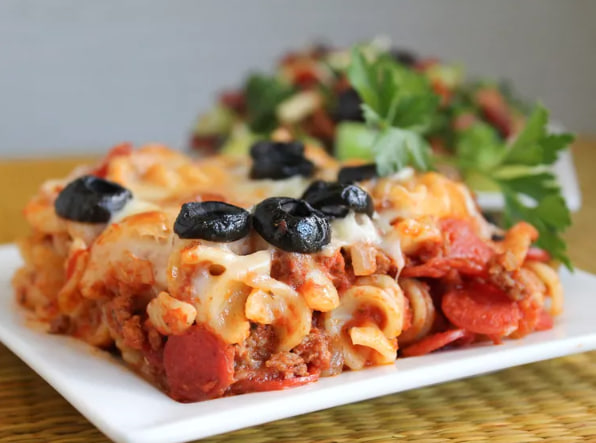

This creamy pasta bake is one of my favorite midweek pasta dishes. My whole family loves it, and there is not much prep. Once the pasta bake is in the oven, you can make a salad or set the table, and then it's time to eat.
Ingredients
Directions
Step 1
Preheat oven to 350 degrees F (175 degrees C).
Step 2
Bring a large pot of lightly salted water to a boil. Add pasta and cook for 8 to 10 minutes or until al dente; drain.
Step 3
In a medium skillet over medium-high heat, cook beef with onion until beef is brown. Drain. Combine beef mixture with spaghetti sauce, pepperoni and cooked pasta and pour into a 9x13 inch baking dish. Top with mozzarella.
Step 4
Bake in preheated oven for 30 minutes, until cheese is melted and golden.